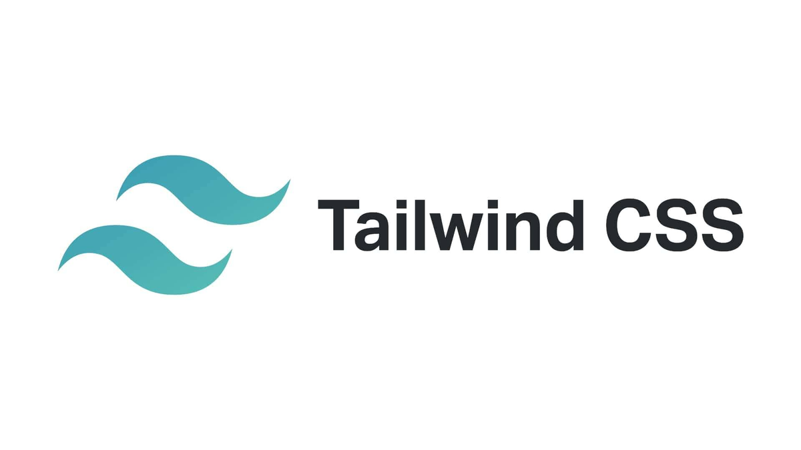

Tailwind CSS
Что такое Tailwind CSS?
Tailwind CSS — это современный утилитарный CSS-фреймворк, который позволяет разработчикам создавать уникальные пользовательские интерфейсы с использованием класса для каждой CSS-стилизации. Вместо того чтобы предоставлять готовые компоненты, Tailwind предлагает гибкие утилиты, которые позволяют настраивать стили прямо в разметке.
Основные характеристики Tailwind CSS
- Утилитарный подход:
- Адаптивность:
- Настраиваемость:
- Скорость разработки:
- Совместимость с JavaScript:
Tailwind CSS основан на принципе утилитарности, что позволяет вам использовать классы для применения стилей. Это обеспечивает большую гибкость и контроль над дизайном.
Фреймворк поддерживает адаптивные дизайны из коробки с помощью классов, которые позволяют легко управлять стилями для различных экранов и устройств.
Tailwind предлагает обширные возможности настройки, включая возможность создания пользовательских тем, что позволяет разработчикам легко адаптировать стили под требования проекта.
Используя утилитарные классы, вы можете значительно ускорить процесс разработки, избегая написания большого количества CSS-кода.
Tailwind CSS легко интегрируется с современными JavaScript-фреймворками, такими как React, Vue и Angular, что делает его идеальным выбором для создания сложных интерфейсов.
Почему выбрать Tailwind CSS?
Если вы хотите иметь полный контроль над стилями вашего проекта и цените гибкость в разработке, Tailwind CSS — это идеальный выбор. Этот фреймворк помогает создавать высококачественные интерфейсы быстрее и проще, сохраняя при этом полный контроль над каждым элементом дизайна.
Для получения дополнительной информации и доступа к документации, пожалуйста, посетите официальный сайт Tailwind CSS.